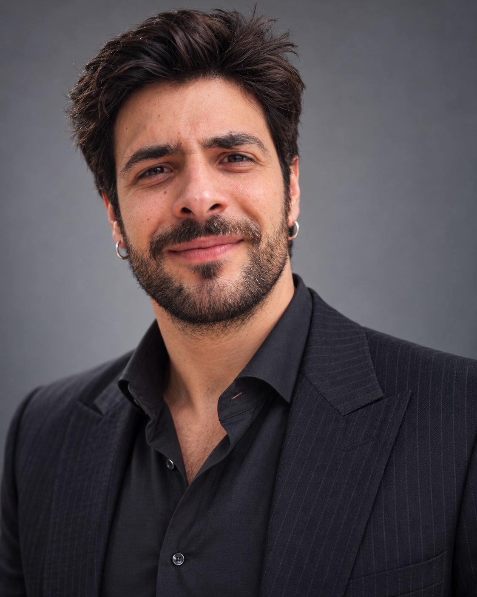

Curiosità tecnica.
Attitudine a costruire.
Sono Salvatore Arancio Febbo, ingegnere informatico. Lavoro tra ricerca, intelligenza artificiale, sviluppo software e nuove idee di impresa.

Capire come funziona qualcosa.
E immaginare come migliorarlo.
Ho studiato ingegneria informatica e intelligenza artificiale all'Università di Pisa. La ricerca mi ha portato a confrontarmi con computer vision, sistemi autonomi e coordinamento di sciami robotici.
Nel lavoro indipendente porto questo metodo nei problemi delle aziende: analisi, progettazione, sviluppo e attenzione a ciò che accade quando il software incontra il mondo reale.
Un percorso tra
ricerca e applicazione.
Attività indipendente · Software & AI
Progetto e sviluppo software e automazioni, affrontando problemi operativi e opportunità di nuovi prodotti digitali.
Ricerca · AI applicata al settore agricolo
Università di Pisa, Polo Sistemi Logistici di Livorno. Analisi di processi e possibilità di soluzioni intelligenti per la gestione operativa.
Ricerca · 4D Drone Swarms (4DDS)
All’Università di Pisa ho contribuito come coautore al paper Embodying swarm coordination in robotic cyber-physical systems, dedicato al coordinamento di sciami robotici tramite flocking e stigmergy. Lo studio utilizza ROS 2, PX4 e Gazebo per sperimentare logiche di cooperazione in ambienti simulati e scenari complessi. Il progetto finanziato 4DDS si è concluso nel 2025; continuo ad approfondire questa linea di ricerca.
University of Luxembourg · Ricerca
Attività di ricerca collegata alla tesi magistrale e a problematiche di computer vision.
Laurea magistrale · Artificial Intelligence & Data Engineering
Università di Pisa.
Laurea in Ingegneria Informatica
Università di Pisa.